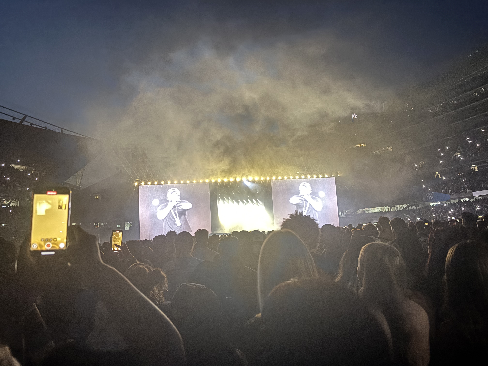

Born in 1987, the height of the Crack epidemic in Compton, Kendrick Lamar grew up in a neighborhood marked by violence and poverty. Despite these challenges, he found solace in music and began rapping at a young age. His early experiences shaped his perspective and influenced his lyrical content, which often addresses the harsh realities of urban life. He could have easily became a product of his environment and internalize the negative influences, but instead he pushed through and creates music that expresses and appreciates his roots, while simultaneously calling out and denouncing the systemic and insiduous issues that plagues his community. He already had a great underground following before breaking into the mainstream with his Major Label debut album "good kid, m.A.A.d city." Once he released this album, he gained widespread recognition and critical acclaim. Your'e probably already familiar with a few songs like "HUMBLE","B*tch Don't Kill My Vibe", "Alright", and even more recently "Not Like Us". But let me put you on to some of my favorite songs that really speak to me the most, and hopefully inspire you to take your own journey into his discography. Take a moment, sit down, and listen intently.
